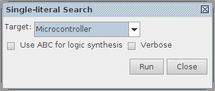
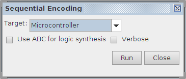

help:encoding_plugin
Table of Contents
CPOG encoding plugin
The CPOG encoding plugin is used for deriving a compact representation for a collection of partial orders. The result is expressed as a Conditional Partial Order Graph (CPOG), which contains all partial orders in a compact form. Each partial order can then be highlighted and activated by setting Boolean parameters to appropriate values (according to the codes that are derived for each partial order).
The plugin uses ABC – a software for the sequential synthesis and verification. This is used to synthesise the final controller, meant for managing the sequentiality of the operation to be performed real time. For more information about this program, please take a look at the original website: http://www.eecs.berkeley.edu/~alanmi/abc/.
Several approaches to derive the final CPOG are incorporated. Each of them has its own advantages and drawbacks and might be potentially exploited. Below the description of each technique is present with few figures, which might be helpful for a better understanding of the tool and process in general.
The plugin handles 5 out of the 6 techniques available to derive the final CPOG. The only technique which is handled separately is the so called “SAT-based optimal encoding”. It works with SAT-based programs (Clasp, Minisat). They are not included in the Workcraft package directly, but they might be downloaded and used by users interested on them.
All the techniques that are described below can be accessed via Encoding menu. It becomes visible for CPOG models. This menu contains six different approaches.
Heuristic / Exhaustive / Random encoding
The dialogue displayed for these three approaches is the same and depicted below.

This is accessible by the corresponding buttons. Before discussing about each features which these methods allow, it is worthwhile listing what each approach is about.
- Heuristic encoding: this a technique which aims at inspecting only the heuristically optimal solutions(according to a cost function empirically analysed during some research). It is scalable, and it might be applied to derive the compositional graph of a decently high number of graphs.
- Exhaustive search: it attempts (when feasible) to explore the whole solution space associated to the partial orders selected. As the the number of the encodings depends on the graphs and on the opcodes available, it is not always possible to use this method.
- Random search: randomly encodes all the partial orders that the user wants to work with. It might be useful also for demonstrative purposes.
In order to use one of the technique described in this tutorial, the user must make sure to first have selected at least two partial orders composed and displayed in the dedicated workspace. After that, one may choose which approach to apply for the derivation of the CPOG.
- Target: which target the Boolean equations will be optimised for. In the case “Microcontroller” is selected, the solution which minimises the final controller will be chosen. Whereas, if “CPOG” is selected the encoding that minimise each Boolean formula associated to all the nodes and arcs of the compositional graph will be picked.
- Use ABC for logic synthesis: it allows the usage of ABC tool in order to map all the final equations with a specified technology library. This file should be in the genlib format1), and must be addressed in the option of ScEnco (Edit → Preferences… → External tools → SCENCO → Gate library…). ABC is not included inside Workcraft's package. It should be downloaded and installed by the official website mentioned above.
- Verbose: all the output of ScEnco will be entirely displayed at the bottom of Workcraft.
- Search range:
- Number of solutions to generate: number of actual encodings generated at the beginning and compared to establish which one is the best fit for the compositional representation.Feature not available for Exhaustive approach.
- (slow)/(fast) radio buttons: if the slow option is selected, all the solutions generated will be synthesised and compared; if the other one is chosen only the ones which are supposed to be heuristically optimal (among the ones initially generated) will be synthesised and compared. Feature not available for Exhaustive approach.
- Custom encoding: in here, the user may set any constraints to the partial orders such as the number of bits to be using or the reservation of any bits. ScEnco will yet try to find the best solution, according to constraints set.
SAT-based optimal encoding
Go to Encoding → SAT-based optimal encoding. This will create a new group with the synthesised Conditional Partial Order Graph and will show the computed encodings below each scenario.

It is important to tune the encoding tool in order to produce results of desired quality. The tool window will allow you to set the following encoding parameters:
- The number of encoding variables (note that you need at least log2(N) variables to encode N scenarios).
- The maximum number of 2-input gates in the combinational circuit computing all the conditions in the resulting Conditional Partial Order Graph.
Furthermore, you can control which SAT-solver is used for optimal encoding by navigating to Edit → Preferences… and locating the section related to the SCENCO plugin. You will be able to set the following parameters there:
- The preferred SAT solver.
Single-literal encoding
This encoding algorithm produces a CPOG with simple conditions (each condition is a single positive or negated literal).

Sequential encoding
The sequential encoding produces a CPOG with trivially encoded partial orders: they are given binary codes equal to their order.

2)
Can be downloaded from http://minisat.se/
3)
Can be downloaded from http://www.cs.uni-potsdam.de/clasp/